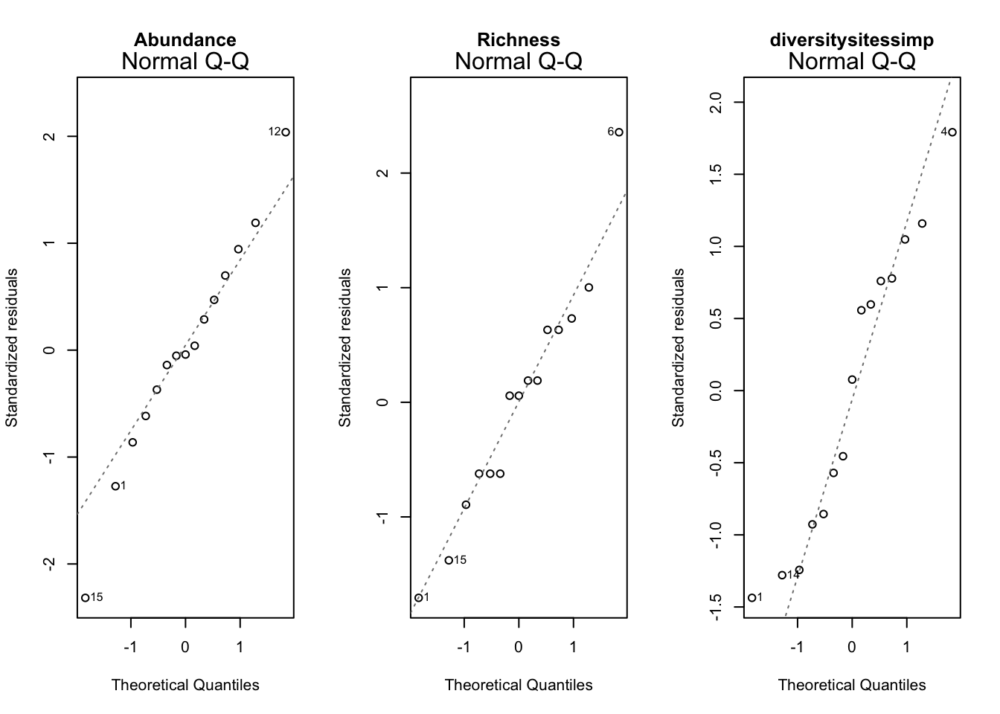

3 Chapter 1
3.1 Hypothesis 1: There is no difference in bat species diversity, abundance, richness between forest types
3.1.1 Abundance ~ Forest Type
3.1.1.1 Boxplots

There appear to be outliers here. Let’s see conduct an anova between abundance and forest type.
3.1.1.2 Assumptions
## [1] 141.5## [1] 71.5## [1] 321.8## Levene's Test for Homogeneity of Variance (center = median)
## Df F value Pr(>F)
## group 2 0.5488 0.5914
## 12##
## Shapiro-Wilk normality test
##
## data: b1$Abundance
## W = 0.95557, p-value = 0.6159##
## Shapiro-Wilk normality test
##
## data: b1[b1$Forest.Type == "CCR", ]$Abundance
## W = 0.89691, p-value = 0.393##
## Shapiro-Wilk normality test
##
## data: b1[b1$Forest.Type == "PCR", ]$Abundance
## W = 0.87606, p-value = 0.2918##
## Shapiro-Wilk normality test
##
## data: b1[b1$Forest.Type == "SLR", ]$Abundance
## W = 0.94741, p-value = 0.7187##
## Shapiro-Wilk normality test
##
## data: aov.abun.resid
## W = 0.98754, p-value = 0.9975The p-value is not less than .05 for either, assuming homogeneity of variances and normality.
3.1.1.3 Results
| term | estimate | std.error | statistic | p.value |
|---|---|---|---|---|
| (Intercept) | 24.0 | 5.971041 | 4.0193995 | 0.00170129503742826 |
| Forest.TypePCR | 1.0 | 8.444327 | 0.1184227 | 0.907691987662934 |
| Forest.TypeSLR | 13.6 | 8.444327 | 1.6105486 | 0.133252659145189 |
| r.squared | adj.r.squared | sigma | statistic | p.value | df | deviance | df.residual |
|---|---|---|---|---|---|---|---|
| 0.2117133 | 0.0803321 | 13.35165 | 1.611444 | 0.239941474991952 | 3 | 2139.2 | 12 |

Not significant (p= .24)
3.1.2 Richness ~ Forest Type.
3.1.2.1 Boxplot:

3.1.2.2 Assumptions:
## [1] 13.2## [1] 24.8## [1] 8.2## Levene's Test for Homogeneity of Variance (center = median)
## Df F value Pr(>F)
## group 2 0.254 0.7798
## 12##
## Shapiro-Wilk normality test
##
## data: b1$Richness
## W = 0.9586, p-value = 0.668##
## Shapiro-Wilk normality test
##
## data: b1[b1$Forest.Type == "CCR", ]$Richness
## W = 0.91408, p-value = 0.4925##
## Shapiro-Wilk normality test
##
## data: b1[b1$Forest.Type == "PCR", ]$Richness
## W = 0.77342, p-value = 0.04834##
## Shapiro-Wilk normality test
##
## data: b1[b1$Forest.Type == "SLR", ]$Richness
## W = 0.80397, p-value = 0.08727##
## Shapiro-Wilk normality test
##
## data: aov.rich.resid
## W = 0.93778, p-value = 0.3553The p-value is not less than .05 for either, assuming homogeneity of variances and normality.
3.1.2.3 Results
| term | estimate | std.error | statistic | p.value |
|---|---|---|---|---|
| (Intercept) | 9.2 | 1.754993 | 5.2421865 | 0.000207034299365802 |
| Forest.TypePCR | 2.2 | 2.481935 | 0.8864053 | 0.392816916824087 |
| Forest.TypeSLR | 3.6 | 2.481935 | 1.4504813 | 0.172556465385781 |
| r.squared | adj.r.squared | sigma | statistic | p.value | df | deviance | df.residual |
|---|---|---|---|---|---|---|---|
| 0.1512554 | 0.0097979 | 3.924283 | 1.069264 | 0.373819776276425 | 3 | 184.8 | 12 |

Not significant (p-values=0.374)
3.1.3 Diversity ~ Forest Type
3.1.3.1 Boxplots

3.1.3.2 Assumptions:
## [1] 0.006321939## [1] 0.002424467## [1] 0.002775702## Levene's Test for Homogeneity of Variance (center = median)
## Df F value Pr(>F)
## group 2 0.6115 0.5586
## 12##
## Shapiro-Wilk normality test
##
## data: b1$diversitysitessimp
## W = 0.95772, p-value = 0.6528##
## Shapiro-Wilk normality test
##
## data: b1[b1$Forest.Type == "CCR", ]$diversitysitessimp
## W = 0.92041, p-value = 0.5326##
## Shapiro-Wilk normality test
##
## data: b1[b1$Forest.Type == "PCR", ]$diversitysitessimp
## W = 0.9067, p-value = 0.448##
## Shapiro-Wilk normality test
##
## data: b1[b1$Forest.Type == "SLR", ]$diversitysitessimp
## W = 0.79006, p-value = 0.06708##
## Shapiro-Wilk normality test
##
## data: aov.rich.resid
## W = 0.93778, p-value = 0.3553The p-value is not less than .05 for either, assuming homogeneity of variances and normality.
3.1.3.3 Results
| term | estimate | std.error | statistic | p.value |
|---|---|---|---|---|
| (Intercept) | 0.8038967 | 0.0277153 | 29.0054695 | 1.75537606517703e-12 |
| Forest.TypePCR | -0.0053519 | 0.0391954 | -0.1365442 | 0.89365509084218 |
| Forest.TypeSLR | -0.0258284 | 0.0391954 | -0.6589649 | 0.522362388083922 |
| r.squared | adj.r.squared | sigma | statistic | p.value | df | deviance | df.residual |
|---|---|---|---|---|---|---|---|
| 0.0387595 | -0.1214473 | 0.0619734 | 0.2419342 | 0.788846308869849 | 3 | 0.0460884 | 12 |
 Not significant, p-value -0.789
Not significant, p-value -0.789
3.1.4 Abundance, Richness and Diversity ~ Combined Forest Type
Given the similarities between CCR and PCR in the data so far, I will merge them into a new category, “MXD”, and rerun analyses for Abundance, Richness, and Diversity.

3.1.4.1 Boxplots

3.1.4.2 Assumptions


All three are parametric.
3.1.4.3 Results
| Variable | term | estimate | std.error | statistic | p.value |
|---|---|---|---|---|---|
| Abundance | (Intercept) | 24.5000000 | 4.0588934 | 6.0361280 | 0 |
| Abundance | FTmergedSLR | 13.1000000 | 7.0302095 | 1.8633868 | 0.09 |
| Richness | (Intercept) | 10.3000000 | 1.2306971 | 8.3692404 | 0 |
| Richness | FTmergedSLR | 2.5000000 | 2.1316299 | 1.1728115 | 0.26 |
| diversitysitessimp | (Intercept) | 0.8012207 | 0.0188435 | 42.5197568 | 0 |
| diversitysitessimp | FTmergedSLR | -0.0231525 | 0.0326379 | -0.7093736 | 0.49 |
| Variable | r.squared | adj.r.squared | sigma | statistic | p.value | df | deviance | df.residual |
|---|---|---|---|---|---|---|---|---|
| Abundance | 0.2107920 | 0.1500837 | 12.8353478 | 3.4722105 | 0.09 | 2 | 2141.70000 | 13 |
| Richness | 0.0956828 | 0.0261199 | 3.8918060 | 1.3754867 | 0.26 | 2 | 196.90000 | 13 |
| diversitysitessimp | 0.0372660 | -0.0367904 | 0.0595884 | 0.5032108 | 0.49 | 2 | 0.04616 | 13 |
Nothing is significant here, but Abundance is almost significant (p=.0852).
3.2 Hypothesis 2: There is no difference in number of feeding guilds between forest type
3.2.1 Feeding guild ~ Forest Type
3.2.1.1 Boxplot

3.2.1.2 Assumptions:
## [1] 1.2## [1] 1.3## [1] 0.3## Levene's Test for Homogeneity of Variance (center = median)
## Df F value Pr(>F)
## group 2 0.3333 0.723
## 12##
## Shapiro-Wilk normality test
##
## data: b1$Feeding.Guild
## W = 0.88103, p-value = 0.04916##
## Shapiro-Wilk normality test
##
## data: b1[b1$Forest.Type == "CCR", ]$Feeding.Guild
## W = 0.82827, p-value = 0.135##
## Shapiro-Wilk normality test
##
## data: b1[b1$Forest.Type == "PCR", ]$Feeding.Guild
## W = 0.96086, p-value = 0.814##
## Shapiro-Wilk normality test
##
## data: b1[b1$Forest.Type == "SLR", ]$Feeding.Guild
## W = 0.68403, p-value = 0.00647##
## Shapiro-Wilk normality test
##
## data: aov.fg.resid
## W = 0.95873, p-value = 0.6703
While the variances are homogenous, feeding guild fails the shapiro-wilkes test. The QQ plot seems borderline, I will assume that this is non-parametric and use a kruskal-wallis test.
3.2.1.3 Results
| term | estimate | std.error | statistic | p.value |
|---|---|---|---|---|
| (Intercept) | 4.8 | 0.4320494 | 11.1098412 | 1.13582774040274e-07 |
| Forest.TypePCR | -1.4 | 0.6110101 | -2.2912878 | 0.0408362971052916 |
| Forest.TypeSLR | -0.2 | 0.6110101 | -0.3273268 | 0.749060275187656 |
| r.squared | adj.r.squared | sigma | statistic | p.value | df | deviance | df.residual |
|---|---|---|---|---|---|---|---|
| 0.3385827 | 0.2283465 | 0.9660918 | 3.071429 | 0.0837246596259315 | 3 | 11.2 | 12 |
Not significant, p-value is .10
Ok, feeding guild itself is not significant, but what if we look at individual feeding guilds?

High flying frugivores and low flying frugivores are both strongly represented. Lets test each one against forest type.
3.2.2 High flying frugivores ~ Forest Type
3.2.2.1 Boxplots

SLR seems like it is different…
3.2.2.2 assumptions
## [1] 42.3## [1] 49.7## [1] 66## Levene's Test for Homogeneity of Variance (center = median)
## Df F value Pr(>F)
## group 2 0.0407 0.9603
## 12##
## Shapiro-Wilk normality test
##
## data: b1$HFF
## W = 0.8997, p-value = 0.09417##
## Shapiro-Wilk normality test
##
## data: b1[b1$Forest.Type == "CCR", ]$HFF
## W = 0.8034, p-value = 0.08634##
## Shapiro-Wilk normality test
##
## data: b1[b1$Forest.Type == "PCR", ]$HFF
## W = 0.75661, p-value = 0.03423##
## Shapiro-Wilk normality test
##
## data: b1[b1$Forest.Type == "SLR", ]$HFF
## W = 0.92034, p-value = 0.5321##
## Shapiro-Wilk normality test
##
## data: aov.hff.resid
## W = 0.93866, p-value = 0.3658 Assumptions are met.
Assumptions are met.
3.2.2.3 Results
| term | estimate | std.error | statistic | p.value |
|---|---|---|---|---|
| (Intercept) | 7.6 | 3.245510 | 2.3416969 | 0.0372706091610285 |
| Forest.TypePCR | 3.2 | 4.589844 | 0.6971915 | 0.498967896491153 |
| Forest.TypeSLR | 8.4 | 4.589844 | 1.8301276 | 0.0921674262778643 |
| r.squared | adj.r.squared | sigma | statistic | p.value | df | deviance | df.residual |
|---|---|---|---|---|---|---|---|
| 0.2214192 | 0.0916557 | 7.25718 | 1.706329 | 0.222752295120196 | 3 | 632 | 12 |
Not significant, p-value=0.223. I find this curious, it seems like this would have been significant.
3.2.3 Low flying frugivores ~ Forest Type
Now lets try LFF.
3.2.3.1 Boxplot

Less distinct trend than HFF.
3.2.3.2 Assumptions:
## [1] 37.5## [1] 12.8## [1] 102.7##
## Shapiro-Wilk normality test
##
## data: b1$LFF
## W = 0.89037, p-value = 0.06793##
## Shapiro-Wilk normality test
##
## data: b1[b1$Forest.Type == "CCR", ]$LFF
## W = 0.85055, p-value = 0.1963##
## Shapiro-Wilk normality test
##
## data: b1[b1$Forest.Type == "PCR", ]$LFF
## W = 0.94265, p-value = 0.6847##
## Shapiro-Wilk normality test
##
## data: b1[b1$Forest.Type == "SLR", ]$LFF
## W = 0.93847, p-value = 0.6552##
## Shapiro-Wilk normality test
##
## data: aov.LFF.resid
## W = 0.96034, p-value = 0.6984
Assumptions met.
3.2.3.3 Results
| term | estimate | std.error | statistic | p.value |
|---|---|---|---|---|
| (Intercept) | 11.0 | 3.193744 | 3.4442336 | 0.00485638105081849 |
| Forest.TypePCR | 0.4 | 4.516636 | 0.0885615 | 0.930891254648081 |
| Forest.TypeSLR | 6.2 | 4.516636 | 1.3727031 | 0.194954826621296 |
| r.squared | adj.r.squared | sigma | statistic | p.value | df | deviance | df.residual |
|---|---|---|---|---|---|---|---|
| 0.164391 | 0.0251229 | 7.141428 | 1.180392 | 0.340422705626064 | 3 | 612 | 12 |
Not significant 0.34.
3.2.4 OMG, OMP, ICF ~ Forest Type
Lets try the next three highest feeding guilds, OMG (omnivorous nectarivore), OMP (omnivorous predator), ICF (insecti-carnivore).
3.2.4.1 Boxplot

Nothing pops out too much here
3.2.4.2 assumptions:
## NULL## NULL
## NULL
OMP and OMG violate assumption of normality, while ICG does not. ICG violates normality of residuals however.
3.2.4.3 Results
| Variable | term | estimate | std.error | statistic | p.value |
|---|---|---|---|---|---|
| OMG | (Intercept) | 1.0 | 0.3915780 | 2.5537696 | 0.03 |
| OMG | Forest.TypePCR | -0.6 | 0.5537749 | -1.0834727 | 0.3 |
| OMG | Forest.TypeSLR | 0.0 | 0.5537749 | 0.0000000 | 1 |
| ICG | (Intercept) | 1.0 | 0.5597619 | 1.7864740 | 0.1 |
| ICG | Forest.TypePCR | 0.2 | 0.7916228 | 0.2526456 | 0.8 |
| ICG | Forest.TypeSLR | 1.0 | 0.7916228 | 1.2632279 | 0.23 |
| OMP | (Intercept) | 2.0 | 0.5416026 | 3.6927447 | 0 |
| OMP | Forest.TypePCR | -1.8 | 0.7659417 | -2.3500484 | 0.04 |
| OMP | Forest.TypeSLR | -1.2 | 0.7659417 | -1.5666989 | 0.14 |
| Variable | r.squared | adj.r.squared | sigma | statistic | p.value | df | deviance | df.residual |
|---|---|---|---|---|---|---|---|---|
| OMG | 0.2117133 | 0.0803321 | 13.3516541 | 1.6114435 | 0.24 | 3 | 2139.20000 | 12 |
| ICG | 0.1512554 | 0.0097979 | 3.9242834 | 1.0692641 | 0.37 | 3 | 184.80000 | 12 |
| OMP | 0.0372660 | -0.0367904 | 0.0595884 | 0.5032108 | 0.49 | 2 | 0.04616 | 13 |
Nothing significant here.
3.2.5 Richness of feeding guilds ~ Forest Type
3.2.5.1 Boxplots
## [[1]]
## NULL
##
## [[2]]
## NULL
##
## [[3]]
## NULL
##
## [[4]]
## NULL
##
## [[5]]
## NULL
Interesting.
3.2.5.2 Assumptions:
## NULL## NULL
## NULL## NULL## NULL

HFF.rich, LFF.rich meet assumptions. OMG.rich, ICG.rich, OMP.rich violate assumption of normality, I will use a KW test on them.
3.2.5.3 Results
| Variable | term | estimate | std.error | statistic | p.value |
|---|---|---|---|---|---|
| HFF.rich | (Intercept) | 3.2 | 0.8563488 | 3.7367949 | 0 |
| HFF.rich | Forest.TypePCR | 2.4 | 1.2110601 | 1.9817348 | 0.07 |
| HFF.rich | Forest.TypeSLR | 2.8 | 1.2110601 | 2.3120239 | 0.04 |
| LFF.rich | (Intercept) | 2.0 | 0.4082483 | 4.8989795 | 0 |
| LFF.rich | Forest.TypePCR | 1.4 | 0.5773503 | 2.4248711 | 0.03 |
| LFF.rich | Forest.TypeSLR | 1.2 | 0.5773503 | 2.0784610 | 0.06 |
| ICG.rich | (Intercept) | 1.0 | 0.4690416 | 2.1320072 | 0.05 |
| ICG.rich | Forest.TypePCR | 0.0 | 0.6633250 | 0.0000000 | 1 |
| ICG.rich | Forest.TypeSLR | 0.6 | 0.6633250 | 0.9045340 | 0.38 |
| OMP.rich | (Intercept) | 1.4 | 0.3464102 | 4.0414519 | 0 |
| OMP.rich | Forest.TypePCR | -1.2 | 0.4898979 | -2.4494897 | 0.03 |
| OMP.rich | Forest.TypeSLR | -0.8 | 0.4898979 | -1.6329932 | 0.13 |
| OMG.rich | (Intercept) | 1.0 | 0.3162278 | 3.1622777 | 0.01 |
| OMG.rich | Forest.TypePCR | -0.6 | 0.4472136 | -1.3416408 | 0.2 |
| OMG.rich | Forest.TypeSLR | -0.2 | 0.4472136 | -0.4472136 | 0.66 |
| Variable | r.squared | adj.r.squared | sigma | statistic | p.value | df | deviance | df.residual |
|---|---|---|---|---|---|---|---|---|
| HFF.rich | 0.3426295 | 0.2330677 | 1.9148542 | 3.1272727 | 0.08 | 3 | 44.0 | 12 |
| LFF.rich | 0.3644068 | 0.2584746 | 0.9128709 | 3.4400000 | 0.07 | 3 | 10.0 | 12 |
| OMG.rich | 0.0833333 | -0.0694444 | 1.0488088 | 0.5454545 | 0.59 | 3 | 13.2 | 12 |
| ICG.rich | 0.3414634 | 0.2317073 | 0.7745967 | 3.1111111 | 0.08 | 3 | 7.2 | 12 |
| OMP.rich | 0.1346154 | -0.0096154 | 0.7071068 | 0.9333333 | 0.42 | 3 | 6.0 | 12 |
Nothing significant here, although HFF.rich and LFF.rich are close!
3.2.6 Feeding guild variables ~ Combined Forest Type
Given the similarities between CCR and PCR in the data so far, I will merge them into a new category, “MXD”, and rerun analyses for all of the previously ran feeding guild tests.
3.2.6.1 Boxplots

Some differences seem to emerge.
3.2.6.2 Assumptions:


Feeding guild, OMG, ICG, OMP, OMG.Rich, ICG.RICH, OMP.RICH all violate assumptions of normality. I will use a Kruskal-wallis test for these.
3.2.6.3 Results

| Variable | term | estimate | std.error | statistic | p.value |
|---|---|---|---|---|---|
| m.Feeding.Guild.merged | (Intercept) | 4.1 | 0.3519178 | 11.6504472 | 0 |
| m.Feeding.Guild.merged | FTmergedSLR | 0.5 | 0.6095395 | 0.8202913 | 0.43 |
| m.HFF.merged | (Intercept) | 9.2 | 2.2491024 | 4.0905208 | 0 |
| m.HFF.merged | FTmergedSLR | 6.8 | 3.8955596 | 1.7455772 | 0.1 |
| m.LFF.merged | (Intercept) | 11.2 | 2.1704307 | 5.1602662 | 0 |
| m.LFF.merged | FTmergedSLR | 6.0 | 3.7592962 | 1.5960434 | 0.13 |
| m.OMG.merged | (Intercept) | 0.7 | 0.2787334 | 2.5113603 | 0.03 |
| m.OMG.merged | FTmergedSLR | 0.3 | 0.4827804 | 0.6214005 | 0.55 |
| m.ICG.merged | (Intercept) | 1.1 | 0.3812933 | 2.8849179 | 0.01 |
| m.ICG.merged | FTmergedSLR | 0.9 | 0.6604194 | 1.3627703 | 0.2 |
| m.OMP.merged | (Intercept) | 1.1 | 0.4446260 | 2.4739892 | 0.03 |
| m.OMP.merged | FTmergedSLR | -0.3 | 0.7701149 | -0.3895523 | 0.7 |
| m.HFF.rich.merged | (Intercept) | 4.4 | 0.6702468 | 6.5647460 | 0 |
| m.HFF.rich.merged | FTmergedSLR | 1.6 | 1.1609015 | 1.3782392 | 0.19 |
| m.LFF.rich.merged | (Intercept) | 2.7 | 0.3385489 | 7.9752133 | 0 |
| m.LFF.rich.merged | FTmergedSLR | 0.5 | 0.5863840 | 0.8526836 | 0.41 |
| m.OMG.rich.merged | (Intercept) | 0.7 | 0.2303843 | 3.0384016 | 0.01 |
| m.OMG.rich.merged | FTmergedSLR | 0.1 | 0.3990373 | 0.2506031 | 0.81 |
| m.ICG.rich.merged | (Intercept) | 1.0 | 0.3186510 | 3.1382296 | 0.01 |
| m.ICG.rich.merged | FTmergedSLR | 0.6 | 0.5519197 | 1.0871146 | 0.3 |
| m.OMP.rich.merged | (Intercept) | 0.8 | 0.2882307 | 2.7755547 | 0.02 |
| m.OMP.rich.merged | FTmergedSLR | -0.2 | 0.4992302 | -0.4006168 | 0.7 |
| Variable | r.squared | adj.r.squared | sigma | statistic | p.value | df | deviance | df.residual |
|---|---|---|---|---|---|---|---|---|
| m.Feeding.Guild.merged | 0.0492126 | -0.0239249 | 1.1128619 | 0.6728778 | 0.43 | 2 | 16.1 | 13 |
| m.HFF.merged | 0.1898817 | 0.1275649 | 7.1122862 | 3.0470397 | 0.1 | 2 | 657.6 | 13 |
| m.LFF.merged | 0.1638449 | 0.0995253 | 6.8635044 | 2.5473547 | 0.13 | 2 | 612.4 | 13 |
| m.OMG.merged | 0.0288462 | -0.0458580 | 0.8814324 | 0.3861386 | 0.55 | 2 | 10.1 | 13 |
| m.ICG.merged | 0.1250000 | 0.0576923 | 1.2057554 | 1.8571429 | 0.2 | 2 | 18.9 | 13 |
| m.OMP.merged | 0.0115385 | -0.0644970 | 1.4060310 | 0.1517510 | 0.7 | 2 | 25.7 | 13 |
| m.HFF.rich.merged | 0.1274900 | 0.0603739 | 2.1195065 | 1.8995434 | 0.19 | 2 | 58.4 | 13 |
| m.LFF.rich.merged | 0.0529661 | -0.0198827 | 1.0705857 | 0.7270694 | 0.41 | 2 | 14.9 | 13 |
| m.OMG.rich.merged | 0.0048077 | -0.0717456 | 0.7285391 | 0.0628019 | 0.81 | 2 | 6.9 | 13 |
| m.ICG.rich.merged | 0.0833333 | 0.0128205 | 1.0076629 | 1.1818182 | 0.3 | 2 | 13.2 | 13 |
| m.OMP.rich.merged | 0.0121951 | -0.0637899 | 0.9114654 | 0.1604938 | 0.7 | 2 | 10.8 | 13 |
THe number of species of OMG were significantly different between MXD and CCR!
3.3 Hypothesis 3: There is no relationship between Abundances of Individual species and forest type
3.3.1 Identify the most common species

Three species are most abundant: C. brevicauda, A. planirostris, and A. lituratus. Lets use these for analysis.
3.3.2 Common species ~ Forest Type
3.3.2.1 Boxplots

3.3.2.2 Assumptions:


All three violate assumption of normality, so I will use a KW test.
3.3.2.3 Results

| Variable | term | estimate | std.error | statistic | p.value |
|---|---|---|---|---|---|
| m.Carollia.brevicauda | (Intercept) | 9.4 | 2.596151 | 3.6207447 | 0 |
| m.Carollia.brevicauda | Forest.TypePCR | -1.4 | 3.671512 | -0.3813143 | 0.71 |
| m.Carollia.brevicauda | Forest.TypeSLR | 3.2 | 3.671512 | 0.8715755 | 0.4 |
| m.Artibeus.lituratus | (Intercept) | 2.6 | 1.371131 | 1.8962449 | 0.08 |
| m.Artibeus.lituratus | Forest.TypePCR | -0.4 | 1.939072 | -0.2062842 | 0.84 |
| m.Artibeus.lituratus | Forest.TypeSLR | 1.2 | 1.939072 | 0.6188527 | 0.55 |
| m.Artibeus.planirostris | (Intercept) | 2.2 | 1.527525 | 1.4402381 | 0.18 |
| m.Artibeus.planirostris | Forest.TypePCR | 1.2 | 2.160247 | 0.5554921 | 0.59 |
| m.Artibeus.planirostris | Forest.TypeSLR | 2.8 | 2.160247 | 1.2961481 | 0.22 |
| Variable | r.squared | adj.r.squared | sigma | statistic | p.value | df | deviance | df.residual |
|---|---|---|---|---|---|---|---|---|
| m.Carollia.brevicauda | 0.1208696 | -0.0256522 | 5.805170 | 0.8249258 | 0.46 | 3 | 404.4 | 12 |
| m.Artibeus.lituratus | 0.0579065 | -0.0991091 | 3.065942 | 0.3687943 | 0.7 | 3 | 112.8 | 12 |
| m.Artibeus.planirostris | 0.1235392 | -0.0225376 | 3.415650 | 0.8457143 | 0.45 | 3 | 140.0 | 12 |
Darn, nothing significant here either.
3.3.3 Common species ~ Combined Forest Type
Given the similarities between CCR and PCR in the data so far, I will merge them into a new category, “MXD”, and rerun analyses for all of the previously ran feeding guild tests.

3.3.3.1 Boxplot

Some differences seem to emerge.
3.3.3.2 Assumptions:


Only A. lituratus violates normality of residuals, and all violate normality of samples.
3.3.3.3 Results

| Variable | term | estimate | std.error | statistic | p.value |
|---|---|---|---|---|---|
| m.Carollia.brevicauda.merged | (Intercept) | 8.7 | 1.7743905 | 4.9030922 | 0 |
| m.Carollia.brevicauda.merged | FTmergedSLR | 3.9 | 3.0733344 | 1.2689800 | 0.23 |
| m.Artibeus.lituratus.merged | (Intercept) | 2.4 | 0.9331502 | 2.5719333 | 0.02 |
| m.Artibeus.lituratus.merged | FTmergedSLR | 1.4 | 1.6162635 | 0.8661954 | 0.4 |
| m.Artibeus.planirostris.merged | (Intercept) | 2.8 | 1.0510068 | 2.6641121 | 0.02 |
| m.Artibeus.planirostris.merged | FTmergedSLR | 2.2 | 1.8203973 | 1.2085274 | 0.25 |
| Variable | r.squared | adj.r.squared | sigma | statistic | p.value | df | deviance | df.residual |
|---|---|---|---|---|---|---|---|---|
| m.Carollia.brevicauda.merged | 0.1102174 | 0.0417726 | 5.611115 | 1.6103103 | 0.23 | 2 | 409.3 | 13 |
| m.Artibeus.lituratus.merged | 0.0545657 | -0.0181600 | 2.950880 | 0.7502945 | 0.4 | 2 | 113.2 | 13 |
| m.Artibeus.planirostris.merged | 0.1010017 | 0.0318480 | 3.323576 | 1.4605385 | 0.25 | 2 | 143.6 | 13 |
Nothing significant here.